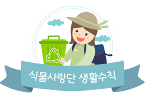
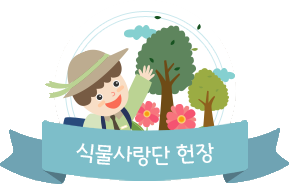

home > 멤버십 > 식물사랑단
식물사랑단
식물사랑단은 어린이들이 에버랜드의 특별한 정원과 식물을 만나고, 가꾸고, 연구하여 세상에 초록 사랑을 널리 전하는 리더로 성장해 나가도록 도와주는 에버랜드 멤버십 프로그램입니다.
| 구분 | 키즈(Kids) |
초급(Basic) |
고급(Advanced) |
|---|---|---|---|
| 주제 | 에버랜드에서 만나는 12개 정원 | 에버랜드에서 만나는 12개 정원 | 에버랜드에서 만나는 12가지 식물 친구들 |
| 프로그램 특징 | 부모와 함께하는 식물 감성교육 | 놀이를 통해 식물과 친해지고, 이해하고, 돌보는 체험교육 | 놀이로 식물을 탐색하고 식물계를 이해하는 과학교육 |
| 대상 | 6~7세 15년 1월 ~ 16년 12월 |
초등 1~4학년 | 초등 2~6학년 ※주니어 과정 수료자 포함 누구나 신청 가능 |
| 가입비 | 추후 공지 *키즈 단원은 수업 참여 시 에버랜드 이용권이 별도로 필요합니다. |
추후 공지 | 신규 : 추후 공지 재가입 : 추후 공지 ※ 6기 주니어 단원 限 |
| 가입기간 | 2021년 4월 6일 10시 ~ 4월 30일 16시 | 2021년 4월 6일 10시 ~ 4월 30일 16시 ※선착 순 마감 |
2021년 4월 6일 10시 ~ 4월 30일 16시 ※선착 순 마감 |
| 활동기간 | 2021년 5월 ~ 2022년 4월 | 2021년 5월 ~ 2022년 4월 | 2021년 5월 ~ 2022년 4월 |
| 단원혜택 | -단원용품 제공 (단원증, 가방, 모자) -단원 가입 축하 선물 -체험학습스쿨 참여 자격 부여 (참가비 별도) -체험학습스쿨 참가 시 해당 주제 식물 및 교재 제공 -연간이용권 가입 할인혜택 제공 |
-단원용품 제공 (단원증, 가방, 모자) -단원 가입 축하 선물 -체험학습스쿨 참여 자격 부여 (참가비 별도) -체험학습스쿨 참가 시 해당 주제 식물 및 교재 제공 -연간이용권 가입 할인혜택 제공 |
-단원용품 제공 (단원증, 가방, 모자) ※재가입 시 단원증만 제공 -단원 가입 축하 선물 -체험학습스쿨 참여 자격 부여 (참가비 별도) -체험학습스쿨 참가 시 해당 주제 식물 및 교재 제공 -연간이용권 가입 할인혜택 제공 |
| 참고사항 | -수료 및 개근 시 상장 및 축하 선물 제공 *단, 수료식이 포함된 체험에 참가할 경우 수령 가능 *개근 모든 체험 참가를 의미 |
-수료 및 개근 시 상장 및 축하 선물 제공 *단, 수료식이 포함된 체험에 참가할 경우 수령 가능 *개근 모든 체험 참가를 의미 |
-수료 및 개근 시 상장 및 축하 선물 제공 *단, 수료식이 포함된 체험에 참가할 경우 수령 가능 *개근 모든 체험 참가를 의미 |
- 유의사항
- 단원 가입은 선착순으로 조기 마감될 수 있습니다. (단원 가입 신청 시 1회 1명만 가능, 다자녀 가입 희망 시 각각 가입 신청 바랍니다.)
- 키즈, 초급 단원은 첫 참여시 단원의 나이 확인을 위한 증빙서류가 필요하며, 나이가 다를 경우 멤버십 활동이 불가합니다.
- *단원증 양도 및 체험학습스쿨 대리 참석은 불가합니다.
- 당일 체험 종료 후 에버랜드 이용을 원하는 단원은 에버랜드 입장 전 매표소에서 이용권을 구입 후 입장 해 주세요.
- 식물 사랑단 연간 이용 할인권은 타인 양도가 불가능합니다.
- 식물사랑단 연간이용권 할인 쿠폰(레귤러권) 제공
- *연간 이용권 할인 쿠폰은 에버랜드 앱(APP)을 통해 발권되며 유의사항을 꼭 확인해 주세요.
- 체험 환불 규정 안내
- 체험 D-1일 취소 시 10% 위약금
- 체험 당일 수업시간 전 취소 시 30% 위약금
- 체험 당일 수업시간 후 취소 시 100% 위약금
- 체험 당일 취소 시 해당 주제 재예약은 불가합니다.
- 문의전화
- 031) 320 - 8568 (09:00~18:00)
- 031)320-5000 (09:00~18:00)

- 1. 식물 친구들을 아끼고 사랑한다.
- 2. 식물 친구들이 잘 살 수 있도록 환경을 깨끗이 한다
- 3. 나무를 보호하고 종이를 아껴 쓴다.
- 4. 친환경제품을 구입한다.

- 1. 나는 식물과 친해지기 위해 관찰하고 탐구하겠습니다.
- 2. 나는 식물을 돌봄으로 자연보호를 실천하겠습니다.
- 3. 나는 식물 사랑을 널리 전하는 어린이 리더가 되겠습니다.